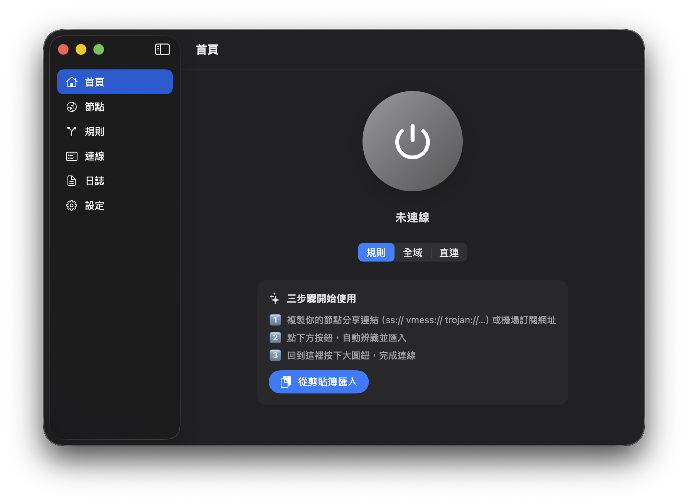

一鍵連線
首頁大按鈕搭配規則、全域、直連三種模式，平常使用不用鑽進複雜設定。
Designed For Daily Routing
首頁大按鈕搭配規則、全域、直連三種模式，平常使用不用鑽進複雜設定。
節點 URI、base64、Clash / Clash.Meta YAML 訂閱、剪貼簿、QR 掃描與 URL scheme 匯入，還有代理群組與節點鏈。
用網域、IP CIDR、GeoIP、Geosite 與程序規則決定代理、直連或拒絕，並可訂閱遠端規則集（Rule Providers）。
Developer ID 直發版可接管終端機、Docker 等不吃系統代理的流量，並提供 Kill switch 防洩漏。
首頁折線圖顯示上傳 / 下載速率與本次用量，支援自動連線、設定備份與自動更新檢查。
繁體中文與英文 UI 隨系統語言自動切換。
Native macOS Feel
ShadowSpace 用 SwiftUI 做出接近系統原生的操作節奏：首頁看狀態、節點頁管理伺服器、 規則頁調整分流、連線頁查看目前流量。

Built-in Engines
需要完整協議、TUN、系統代理控制、GeoIP / Geosite 與 DNS 分流時使用， 功能最完整。
純 Apple 框架實作的 ShadowCore，不依賴外部核心， 啟動輕量，適合日常常用節點。
Open Source
專案以 GPL-3.0 釋出。你可以查看原始碼、自己跑測試，也可以用 make release
走同一套 Developer ID 打包流程。